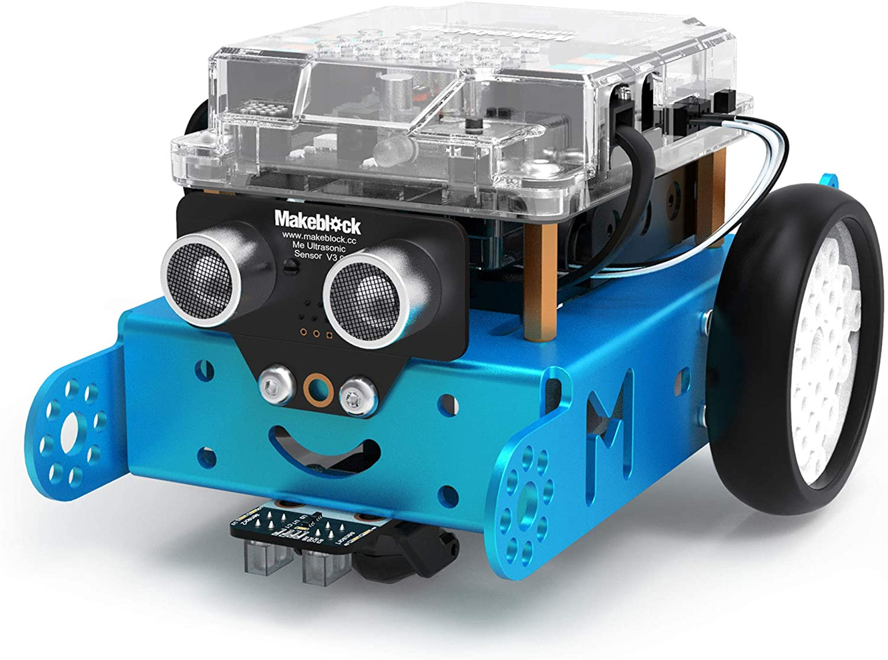
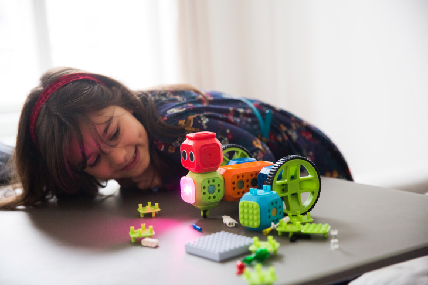
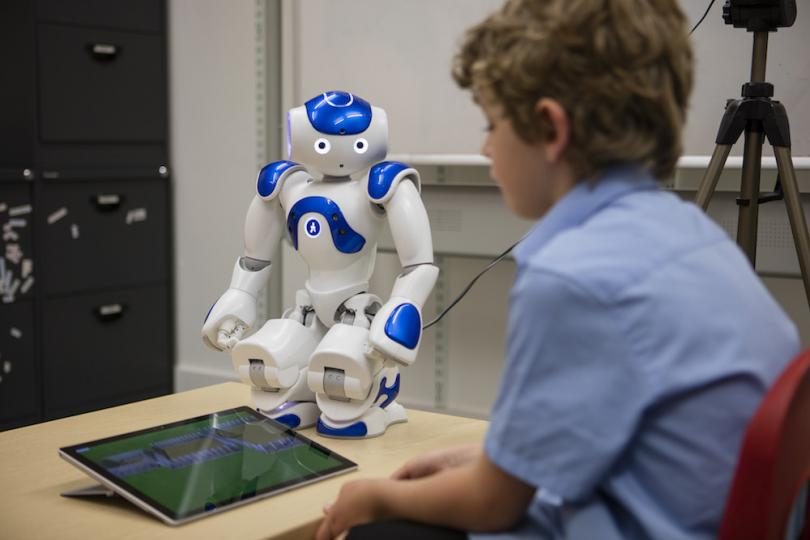
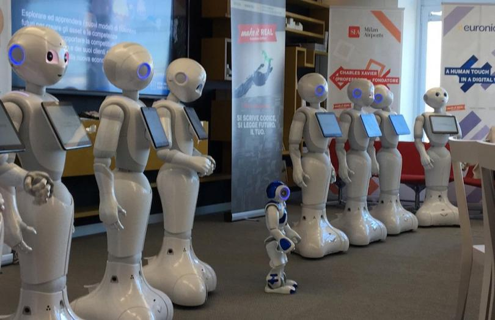

As we move to the future, we get more innovative and more focus in technology. One of the future of technology holds are robots. Robots are what we say, are coming. Not to wreck havoc but to help us humans. There are a lot of kinds of robots but let’s focus on educational robots.
So you wonder what are educational robots. Well, educational robots are robots that would help teachers in teaching the kids/students and to also help in regulating the classroom or to maximize the skills of students in robotics and in programming . We all know that kids loves something out of ordinary or something that would excite them, so these robots will help in achieving that. But there are debates whether if its a good idea to place robots on classrooms. According to a European survey from 2012, public attitudes to robots of over 27,000 people found that 34 % thought robots should be banned from the field of education (Eurobarometer 382 2012). 60 % thought that robots should be banned from the care of children, the elderly or the disabled. Only 3 % of those surveyed thought that robots should be used in education. So it is somewhat mix reaction but for me, it is a great idea to put educational robots to a classroom since there are advantages that can be achieve.
Advantages
• Objects of study for students to practice programming. Educational robots enable students of all ages to become familiar with and deepen their knowledge of robotics and programming, while at the same time learning other cognitive skills. At a young age, students can honed their skills and knowledge in programming and may be become one of the creators of robots in the future. It can also practice their analyzation and problem solving skills. Their creativity and imagination will fuel them in making their robots and it is also a motivation. There are kinds of educational robots that are popular in children and young people.
Makeblock mBot: this is a robot with wheels designed to introduce children to robotics, programming and electronics. It is easy to assemble and easy to control thanks to Scratch-based software designed for children. Its compatibility with the Makeblock platform and its electronic parts based on the Arduino open-source ecosystem allow more experienced users to create more complex robots.
Robo Wunderkind: it consists in a set of blocks that the children can connect as they wish to build their own robot. Each block has a function identified with a colour (camera microphone, motion sensors...) and, after building their robot, the children can use an app to program it to react to certain noises, avoid obstacles or play music when someone approaches, among other functions.
• It can be an aid to teachers
By having a robot at the teacher’s side, they would share the responsibilties in handling the students so that teacher’s can take a rest without worrying. These robots can serve as customized instructors for individuals or groups, engage with students to enhance social and emotional skills and keep detailed data on their interactions so teachers can track student development.
 All in all, robots can help the teachers and students in achieving their goals and it can widen the learning objectives and techniques in the future.